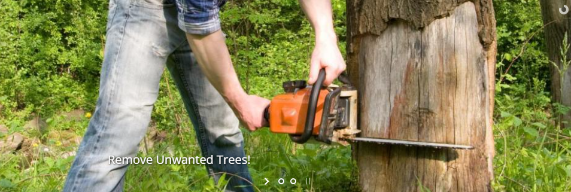

Porfessional Tree Services
At Peeks Tree Service, we are a full service tree service that offers professional and comprehensive tree services to residential and commercial customers in North Little Rock, AR and beyond. Whether small or large, our trained crews are prepared for the job. Whether you need assistance with basic tree maintenance or cleaning up your property after major storm damage, trust the professionals at Peeks Tree Service to get the job done! Call us at (501) 749-4136!
No Matter What Kind Of Tree Services You Are In Need Of, We Can Help!
24/7 Emergency Service
We are available 24/7 to assist you with emergency tree services. Contact us today and let us know, and we will do our best to meet and exceed your immediate need and expectation.